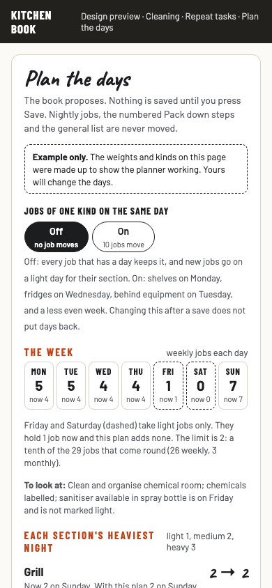
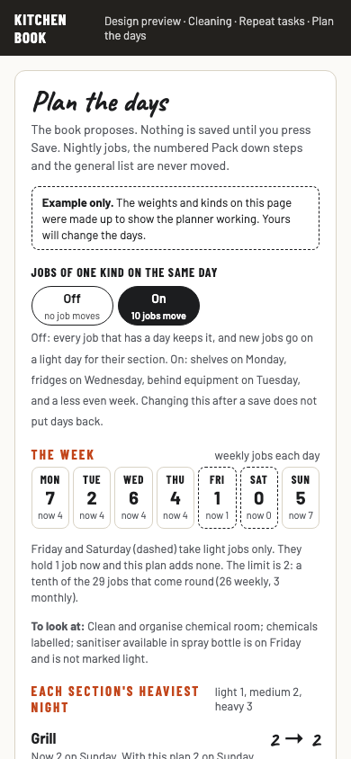
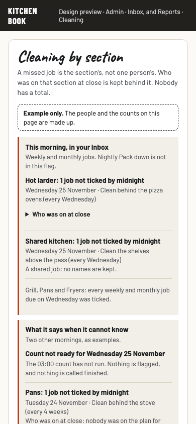
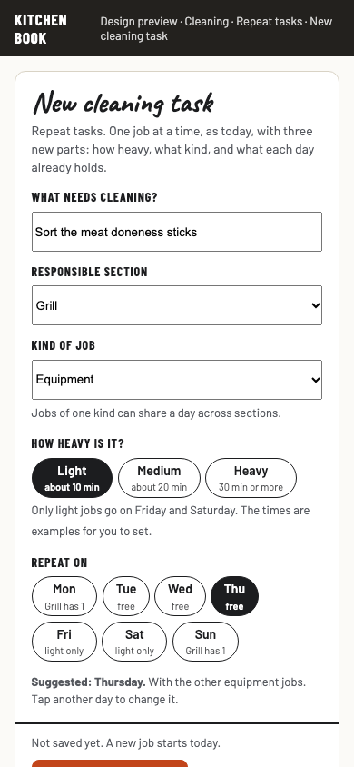
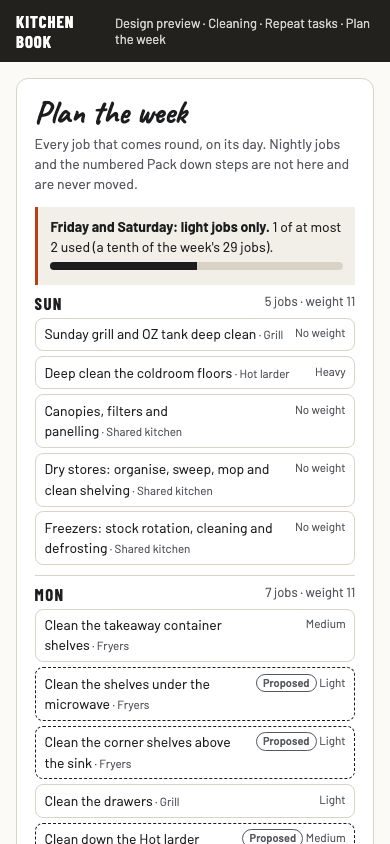
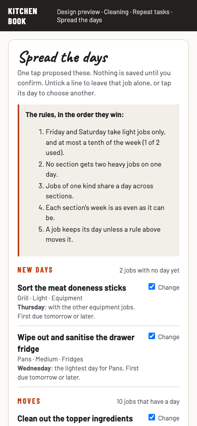
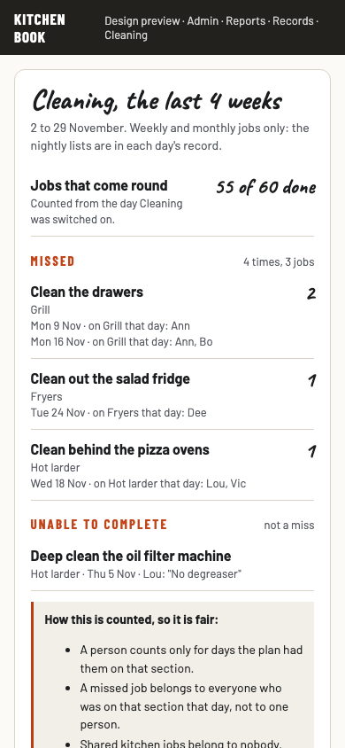
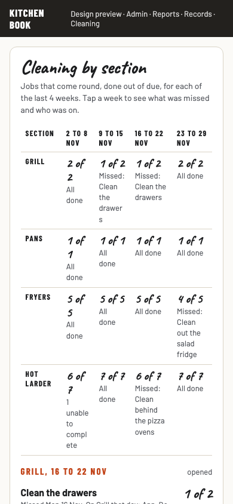
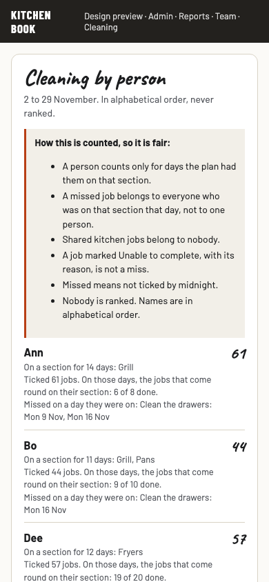

Cleaning: tracking and planning the days
Six designs: three for planning which day each job falls on, three for tracking who did the cleaning and what was missed. Schematic previews, not the book. Nothing in the book has changed.
Recommended: the two mixes below. Council: list of changes first for planning (4 of 6), by job first for tracking (5 of 6).The two mixes
What the council's picks and your word on sections add up to. Three reviewers checked a first drawing and asked for changes. These are redrawn with them; no reviewer has seen the redraw. The weights, kinds, people and counts are made up.
Plan the days: how it opens
Same-kind days off. Every job that has a day keeps it.
- 5 changes: 2 new jobs get a day, 3 monthly jobs get a first date.
- The week as counts, and each section's heaviest night, now and with the plan.
- Every line says "Proposed, not saved". One Save, 5 at a time.

Whole page
Plan the days: same-kind days on
Shelves on Monday, fridges on Wednesday, behind equipment on Tuesday.
- With my example kinds and weights: 10 of the 15 dated jobs move, the week is less even, and no section's heaviest night gets lighter.
- Every move says how long that job waits this once.
- A new job whose day is today says "due tonight" and is left out until you put it in.

Whole page
Cleaning by section
A missed job is the section's. Who was on at close is kept one tap behind it.
- A flag in your Inbox the next morning: "not ticked by midnight".
- One row per section, opening to what was missed and who did what.
- Nobody has a total.

Whole page
Planning the days
Drawn from your real job list. The kinds (Shelves, Fridges, Behind equipment) and the weights (Light, Medium, Heavy) are examples I made up: you would set them. The planner gave your 15 dated jobs these days: 10 would move, 5 stay, and shelves land on Monday, fridges on Wednesday, behind-equipment jobs on Tuesday.
A. In the job
One job at a time, in the form you already use.
- New: how heavy, what kind, and what each day already holds on that section.
- The book suggests a day and says why. You tap another to change it.
- Moving many jobs means opening each one.

B. The week as a board
Every job that comes round, day by day, with the proposed places dashed.
- You see the whole week and each day's weight at once.
- Friday and Saturday show their limit.
- Longest page: 2.7 phone screens.

Whole page · On a laptop

C. A list of changes
One tap proposes. Each line says what changes, why, and what it does to this week.
- Every move says how many days fall between the last clean and the next.
- Untick a line to leave that job alone.
- You do not see the week as a whole.

Whole page
Tracking who did and who missed
The people and numbers here are made up. All three count the same way, printed on each page, so a name is never blamed for a job that was not theirs.
A. By job
The jobs that were missed, with their dates and who was on that section.
- Starts from the problem: which job slips.
- People appear only beside a miss.
- No picture of what each person did.

Whole page
B. By section
Each section, week by week. People show only when a week is opened.
- The section is the unit, so nobody is singled out.
- Shows whether a section is getting better or worse.
- The least about who did what.

Whole page
C. By person
What each person ticked, and what was missed on days they were on.
- Closest to what you asked for.
- Alphabetical, never ranked. Too few days says so.
- The most care needed to keep it fair.

Whole page
How I read what you asked. Tell me where it is wrong.
- "10%" means Friday and Saturday together hold at most a tenth of the week's jobs that come round. With your list that is 2 jobs, light ones only.
- A job with no weight set is never treated as light, so it never lands on Friday or Saturday.
- Never moved by the planner: nightly jobs, the numbered Pack down steps, the Sunday OZ tank step and the drip tray's date.
- Jobs of one kind share a day across sections, unless that would give a section two heavy jobs or too heavy a day. Then the kind gives way and the page says so.
- A job that has a day keeps it unless a rule or its kind's day moves it.
- Monthly jobs get a weekday and a starting week, so they do not all start in the same week.
- Moves are saved 5 at a time. The book's rules refuse 10 in one save (checked on the rules emulator).
- A moved job's week is uneven: it either waits longer or comes round twice. Design C prints the gap for each.
- Tracking counts from the day Cleaning is switched on. A missed job belongs to everyone the plan had on that section that day. Shared kitchen jobs belong to nobody. Unable to complete is not a miss.
- A missed weekly job is not due again until its next day.
- Tracking is for the admin only at first: only the admin can read the nightly counts today.
How these were made
Static pages with the book's own stylesheet, written by previews/build.cjs. The planning pages come from previews/planner.js, one function run on the book's built-in lists and checked with 25 node tests. Nothing here was tapped, saved or timed. Numbers: previews/plan.json, previews/measurements.json.